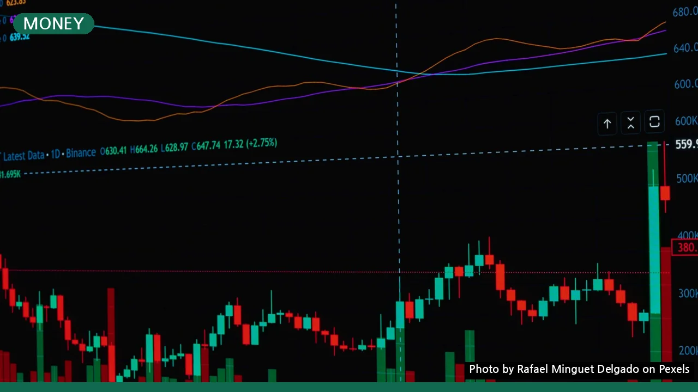
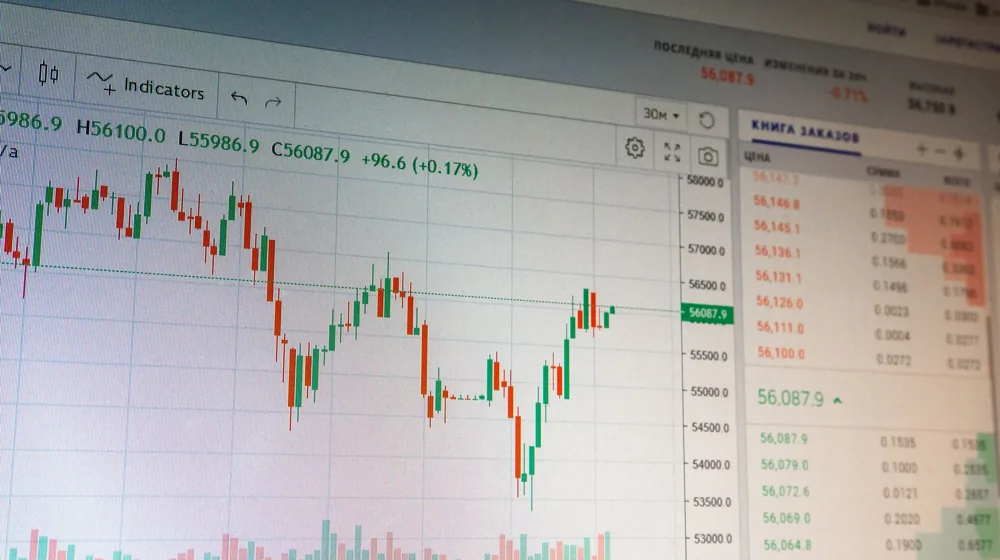

코스피 지수 투자, 정말 괜찮을까? 장점과 단점 완벽 비교로 현명한 선택하기
사진: Rafael Minguet Delgado / Pexels (무료 이미지, 출처 표기)
코스피 지수 투자, 왜 매력적일까?

코스피 지수 투자는 개별 기업 분석의 부담을 덜고 한국 증시 전체의 흐름에 투자하는 방식입니다. 투자 초보자나 분산 투자 효과를 극대화하려는 분들에게 매력적인 선택지가 될 수 있습니다. 한국거래소에 따르면 코스피 지수는 국내 상장된 주식의 시가총액을 가중 평균하여 산출되며, 국내 증시의 전반적인 건강 상태를 보여주는 핵심 지표입니다.
가장 큰 장점은 바로 '분산 투자 효과'입니다. 코스피 지수에 투자하면 사실상 국내 주요 기업 수백 개에 동시에 투자하는 것과 같습니다. 이는 특정 종목의 악재로 인한 손실 위험을 줄여주고, 안정적인 수익을 기대할 수 있도록 돕습니다.
또한, 개별 기업을 분석하고 매매 시점을 고민하는 수고를 덜 수 있습니다. 시장 전체의 성장 흐름에 맞춰 장기적인 관점에서 접근하기 용이하며, 상대적으로 낮은 수수료로 투자를 시작할 수 있다는 점도 매력적인 요소로 꼽힙니다.
알아두어야 할 코스피 지수 투자의 그림자
모든 투자에는 양면성이 존재합니다. 코스피 지수 투자 역시 장점만 있는 것은 아닙니다. 가장 먼저 고려해야 할 점은 시장 평균 수익률을 추구한다는 것입니다.
지수 투자는 개별 기업에 대한 투기적인 고수익을 기대하기 어렵습니다. 시장이 전반적으로 침체기에 접어들면 지수 또한 하락하므로, 시장 하락에 대한 방어가 어렵다는 한계가 있습니다. 내가 투자한 지수 연동 상품이 아무리 잘 운용되어도 시장 전체가 하락하면 손실을 피하기 어렵습니다.
또한, 환매나 매매 시 유동성 제약이 발생할 수 있습니다. 특히 일부 인덱스 펀드의 경우, 즉시 현금화가 어려운 경우도 있으므로 투자 전 상품의 특성을 면밀히 확인하는 것이 중요합니다. 시장 동향과 거시 경제 지표에 대한 기본적인 이해는 여전히 필요합니다.
코스피 지수, 어떤 방식으로 투자할까?
코스피 지수에 투자하는 대표적인 방법으로는 ETF(Exchange Traded Fund, 상장지수펀드)와 인덱스 펀드가 있습니다. 두 가지 방법 모두 코스피 지수를 추종하지만, 거래 방식과 비용 구조에서 차이가 있습니다.
ETF(상장지수펀드): 주식처럼 실시간으로 매매가 가능하며, 증권사를 통해 쉽게 거래할 수 있습니다. 일반적으로 인덱스 펀드보다 운용 수수료가 낮은 편입니다.
인덱스 펀드: 펀드 운용사에 가입하여 투자하며, 매일 종가 기준으로 한 번만 거래됩니다. 전문가가 자산을 운용해주지만, ETF보다는 수수료가 높을 수 있습니다.
각 상품의 정확한 수수료와 거래 조건은 투자하려는 증권사나 자산운용사의 공식 홈페이지에서 다시 확인하시길 권장합니다.
코스피 지수 투자를 위한 체크리스트
성공적인 지수 투자를 위해서는 몇 가지 사항을 미리 점검해야 합니다. 단순히 유행을 따르기보다는 본인의 투자 성향과 목표에 맞춰 신중하게 결정해야 합니다.
- 투자 목표와 기간 설정: 단기적인 시세차익보다는 장기적인 관점에서 접근하는 것이 유리합니다. 은퇴 자금 마련이나 자산 증식 등 명확한 목표를 세워보세요.
- 위험 감수 수준 파악: 시장이 하락할 때도 흔들리지 않을 자신만의 위험 감수 수준을 이해하고, 그에 맞는 투자 비중을 결정해야 합니다.
- 수수료 및 비용 확인: ETF와 펀드마다 운용보수, 판매수수료 등 부과되는 비용이 다릅니다. 장기 투자의 경우 이 비용이 수익률에 큰 영향을 미치므로 꼼꼼히 비교해야 합니다.
- 정기적인 시장 동향 주시: 비록 개별 종목 분석은 하지 않더라도, 국내외 거시 경제 상황이나 주요 정책 변화 등은 코스피 지수에 영향을 미칩니다.
- 상품의 구성 종목 확인: 투자하려는 ETF나 펀드가 어떤 종목들로 구성되어 있는지, 특정 섹터에 편중되어 있지는 않은지 확인하여 의도치 않은 위험에 대비해야 합니다.
성공적인 코스피 지수 투자를 위한 Tip
코스피 지수 투자는 장기적인 관점에서 꾸준히 이어갈 때 그 진가를 발휘합니다. 다음 팁들을 활용하여 더욱 현명하게 투자해보세요.
첫째, 장기적인 관점을 유지하세요. 단기적인 시장 변동에 일희일비하기보다는 장기적인 국내 경제 성장과 기업 가치 증대에 초점을 맞추는 것이 중요합니다. 오랜 기간 꾸준히 투자하면 복리 효과를 통해 더 큰 수익을 기대할 수 있습니다.
둘째, 정액 분할 매수(Dollar-Cost Averaging) 전략을 고려해보세요. 매월 일정 금액을 꾸준히 투자하면 시장이 높을 때는 적은 수량을, 낮을 때는 많은 수량을 사게 되어 평균 매수 단가를 낮추는 효과를 얻을 수 있습니다. 이는 특히 변동성이 큰 시장에서 심리적 안정감을 제공합니다.
셋째, 글로벌 지수와의 비교를 통해 포트폴리오를 다각화하는 것도 좋은 방법입니다. 국내 증시뿐만 아니라 S&P 500, 나스닥 등 해외 주요 지수에도 일부 자산을 배분하면 분산 투자 효과를 더욱 높일 수 있습니다. 2026년 10월 기준, 다양한 해외 지수 추종 ETF 상품들이 출시되어 있으니 관심을 가져볼 만합니다.
🔗 이 글도 함께 보면 좋아요: 배당주 투자, 장점만 보고 시작했다간? 손실 피하는 완벽 비교 가이드
관련 추천 상품
이 포스팅은 쿠팡 파트너스 활동의 일환으로, 이에 따른 일정액의 수수료를 제공받습니다.